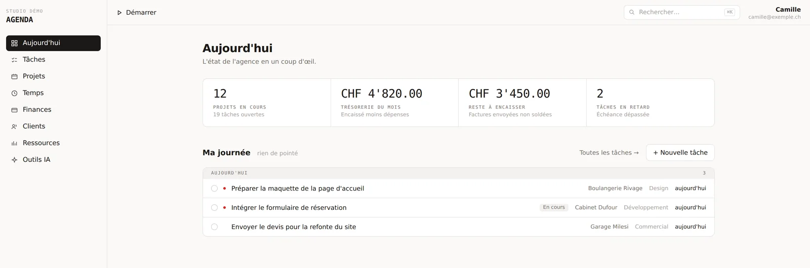
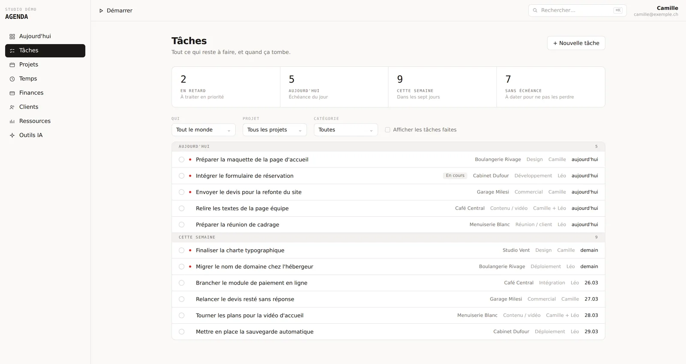
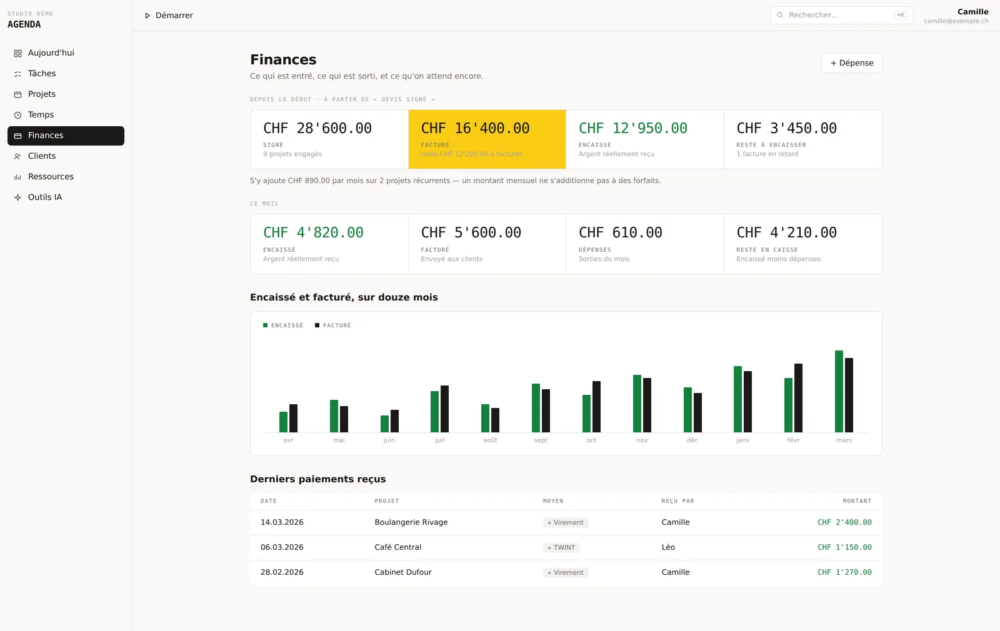

Applications sur mesure
Aucun logiciel du marché ne vous va vraiment ? On le construit sur mesure.
Nous ne faisons pas que des sites. Nous développons aussi des logiciels de gestion sur mesure pour les PME et les indépendants de l'arc lémanique — Lausanne, Morges, Nyon, Vevey, Genève. Des applications web taillées pour une façon de travailler précise : la vôtre.
Le constat
Pourquoi les logiciels de gestion génériques finissent oubliés.
Une entreprise n'abandonne pas un logiciel parce qu'il est mauvais. Elle l'abandonne parce qu'il lui demande trop pour ce qu'il lui rend.
L'information se disperse. Un devis sur le Drive, des tâches dans un outil de gestion, des chiffres dans un tableur, les fichiers ailleurs encore. Reprendre un dossier laissé de côté trois semaines demande vingt minutes rien que pour se resituer.
Les logiciels du marché voient trop large. Ils sont conçus pour convenir à tout le monde, donc parfaitement à personne. Vous payez mille fonctions, vous en utilisez cinquante, et chaque saisie réclame des champs qui ne vous servent à rien.
Alors on cesse de les remplir. Un outil qu'on ne nourrit plus est un outil mort : les données repartent dans un tableur partagé, et on se retrouve au point de départ.
Notre approche
Notre approche du développement sur mesure.
Un outil sur mesure n'a pas à impressionner. Il a à être utilisé tous les jours sans qu'on y pense. Quatre règles guident tout ce que nous développons.
Moins de dix secondes par saisie
Si enregistrer une information prend plus de temps que de la griffonner sur un papier, personne ne le fera. Les actions fréquentes tiennent en deux clics, avec des valeurs déjà remplies.
Uniquement ce qui sert
Pas de module qu'on n'ouvre jamais, pas de champ obligatoire inutile. Ce qui ne répond pas à un besoin réel n'est simplement pas construit.
Consultable depuis le téléphone
On ouvre un dossier chez un client, debout, entre deux rendez-vous. L'interface est pensée pour le petit écran d'abord, pas adaptée après coup.
Rien ne se perd
Les données s'archivent au lieu de disparaître. Une suppression définitive reste possible, mais elle est toujours explicite et annoncée.
Un exemple
Un exemple : une application de gestion complète.
Une application que nous avons conçue et développée de bout en bout : elle réunit les projets, les tâches, le temps passé et l'argent au même endroit. L'objectif tenait en une phrase — ouvrir la fiche d'un projet et savoir en dix secondes où l'on en est, ce qu'il reste à faire, et où sont les fichiers.
Projets
Un pipeline qui suit le cycle réel, de la première discussion à la maintenance. Vue Kanban ou tableau, changement d'étape en un clic, historisé — on sait combien de temps un dossier est resté à chaque étape.
Tâches
Assignation à plusieurs personnes sans hiérarchie, échéances, catégories. Une vue « ma journée » rassemble ce qui est en retard et ce qui tombe aujourd'hui, tous projets confondus.
Temps
Un chronomètre qui survit au rechargement de la page, parce qu'il vit en base et non dans le navigateur. Et la saisie manuelle a posteriori, pour toutes les fois où on l'oublie.
Argent
Devis, factures à numérotation continue, paiements par virement, TWINT ou carte, dépenses ponctuelles et abonnements. Un tableau de bord montre l'encaissé, le dû, et qui n'a pas encore payé.
Rentabilité
Deux lectures côte à côte : ce qui reste réellement en caisse, et la marge une fois les heures valorisées à leur coût. Un projet peut être payé et perdre de l'argent — c'est précisément ce qu'on veut voir.
Ressources
Documents, contrats et modèles réutilisables. Les liens vers le dépôt de code, la maquette ou le site en production, épinglés sur le projet et reconnaissables d'un coup d'œil.



Sous le capot
Les choix techniques d'une application web durable.
Une application métier vit des années. Elle mérite des fondations solides, pas la solution la plus rapide à assembler.
Un détail qui en dit long : les montants ne sont jamais stockés en nombres à virgule, mais en centimes entiers. C'est ce qui évite les totaux qui tombent à un centime près — l'erreur la plus courante des outils de facturation improvisés.
Est-ce pour vous ?
Votre entreprise a-t-elle besoin d'un outil sur mesure ?
- Un fichier Excel partagé qui a grossi jusqu'à devenir illisible, et que plus personne n'ose réorganiser.
- Les mêmes informations recopiées à la main d'un outil à l'autre, plusieurs fois par semaine.
- Un abonnement mensuel pour un logiciel dont vous utilisez à peine le dixième.
- Un processus que vous êtes seul à connaître, qui n'est écrit nulle part.
Si vous vous reconnaissez dans une seule de ces lignes, il y a probablement un outil à construire. Nous commençons toujours par regarder comment vous travaillez aujourd'hui — souvent, la bonne réponse est plus petite que ce qu'on imagine.
Questions fréquentes
Ce qu'on nous demande le plus souvent.
- Combien coûte un logiciel sur mesure ?
- Cela dépend entièrement du périmètre, et c'est précisément pour ça que nous commençons par la plus petite version réellement utile plutôt que par le cahier des charges complet. Vous voyez l'outil fonctionner tôt, vous décidez ensuite de ce qui mérite d'être construit. Un devis chiffré vous parvient sous 24 h ouvrées après un premier échange.
- Combien de temps faut-il pour développer une application de gestion ?
- Nous livrons module par module, chacun utilisable en production dès qu'il est terminé — jamais trois fonctions à moitié faites. Concrètement : la gestion des dossiers d'abord, le suivi du temps ensuite, la facturation après. Vous vous en servez pendant que la suite se construit.
- Faut-il abandonner nos outils actuels d'un seul coup ?
- Non, et c'est rarement une bonne idée. On commence par la partie qui fait le plus mal — souvent le tableur partagé. Vos données existantes sont reprises par import, pour que l'outil soit rempli dès le premier jour plutôt que vide.
- Nos données sont-elles en sécurité ?
- Les documents sont déposés sur un stockage privé, accessible uniquement par lien signé à durée limitée. La base applique une règle d'accès sur chaque ligne, et aucune inscription libre n'est possible : seules les adresses autorisées peuvent ouvrir un compte.